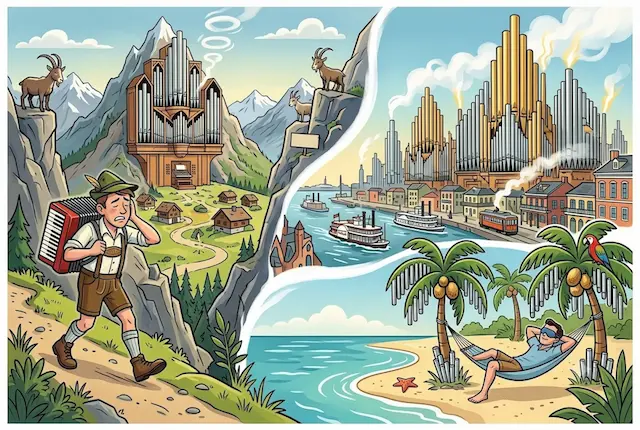

The Absent Organist

My favourite recording of all time—setting aside the Easy Aloha’s Cashmere Cat album for another day—is the 1982 release of Bach’s six Trio Sonatas for organ, recorded for Archiv Production by Ton Koopman. I first heard it shortly after it came out, and it has followed me ever since.
Being a kind of musical geometry of the Holy Trinity—three voices in perfect equilibrium—it seems to accommodate every mood and setting. When you are cheerful, it functions as dance music; when you are not, it consoles. I have listened to it on Alpine peaks, on tropical beaches, and in downtown New Orleans. It fits everywhere, with the odd exception of cities like Istanbul or Casablanca.
Koopman, as it happens, lives two streets away from me. Naarden-Bussum is small enough that, given how often I pass his house, I might reasonably expect to have spotted him at least once—watering the hydrangeas, queuing at the baker, or buying flowers at the market. I have long harboured a mild desire to tell him what that record has meant to me over forty years.
I have never seen him. Not once. Small towns have depths that cities never quite manage.